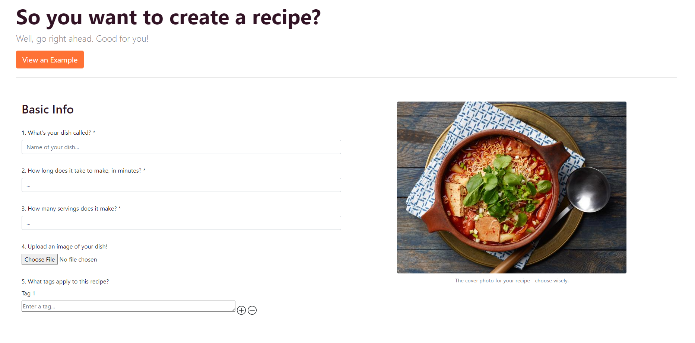

Shef Recipe-Sharing Site
This program is a full-scale website for finding and sharing recipes. It uses Java Servlets for the back end, and Google Firestore for data storage. The program is quite fleshed-out and sophisticated. It has a lot of additional features that you would find on a social media site, like following, comments, likes, livestreams, scheduling events on calendars, and curated for you feeds based on your interests.
I helped to create this program as my capstone project during my summer internship at Google. I worked in a team of 3 interns. We had free reign to create any project we could get approved, and we came up with the concept ourselves. We worked under the supervision of two senior developers, who were also in charge of approving any pull requests.
Technologies used: Java, Javascript, CSS, Bootstrap, HTML, Google Firestore